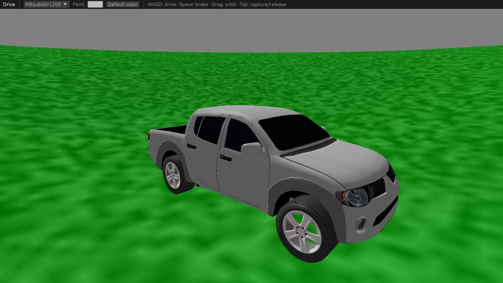
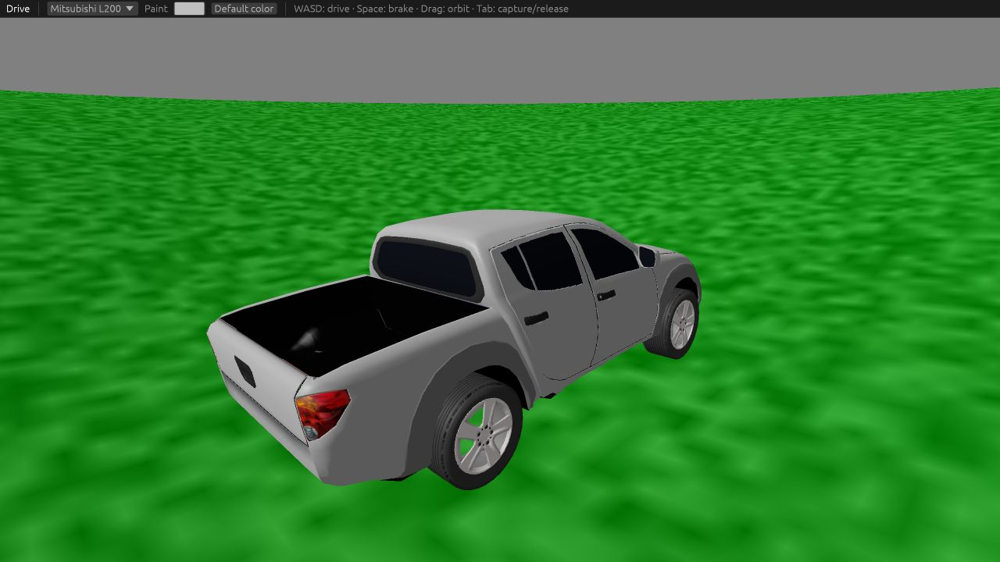
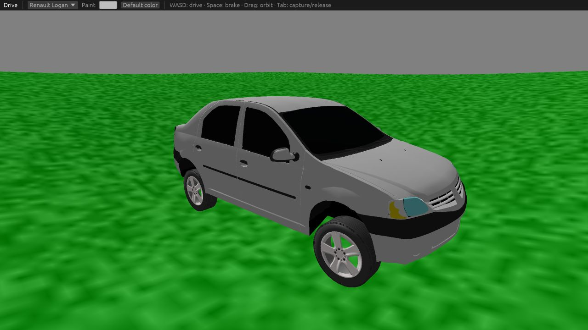
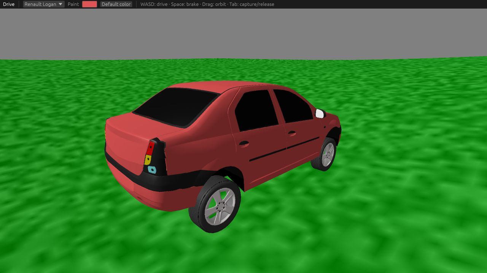

Drive
Vehicle previews captured from the WebGL2 game.

Mitsubishi L200 · Light gray
The default vehicle, with painted body panels and independent wheels.

Mitsubishi L200 · Cargo bed
The separate cab and cargo bed, viewed from behind.

Renault Logan · Light gray
Switch vehicles from the toolbar.

Renault Logan · Custom paint
Paint changes the body while preserving glass, lights, trim and wheels.